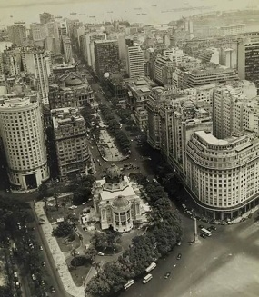
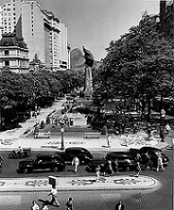

Imagens do Rio Antigo

Flamengo
Bairro conhecido por seu amplo parque de mesmo nome, com locais para piquenique e atividades ao ar livre.

Aterro
Complexo de lazer construído sobre aterros na Baía de Guanabara.

Copacabana
Bairro famoso por sua praia em meia-lua e grande vida urbana.

Praia de Copacabana
Uma das praias mais famosas do Brasil e cartão-postal do Rio.
Vista Chinesa
Mirante na Floresta da Tijuca com estilo arquitetônico chinês.

Central
Estação ferroviária importante no centro do Rio de Janeiro.

Palácio Monroe
Antigo prédio do Senado Federal no centro do Rio.

Cinelândia
Região histórica conhecida pelos cinemas e vida cultural.
Municipal
Um dos teatros mais importantes do Brasil.

Rua do Ouvidor
Rua histórica do centro do Rio de Janeiro.

Carnaval
Festa popular brasileira com desfiles e celebrações.

Carnaval
Desfiles e fantasias inspiradas em tradições europeias.

Avenida Beira Mar
Avenida histórica da zona central do Rio de Janeiro.

Rua Gonçalves Dias
Rua do centro histórico do Rio de Janeiro.